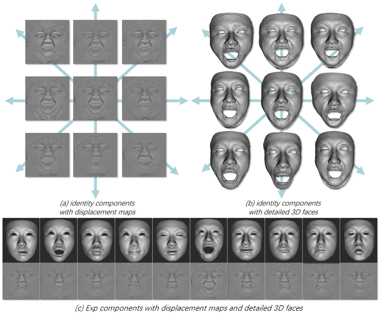
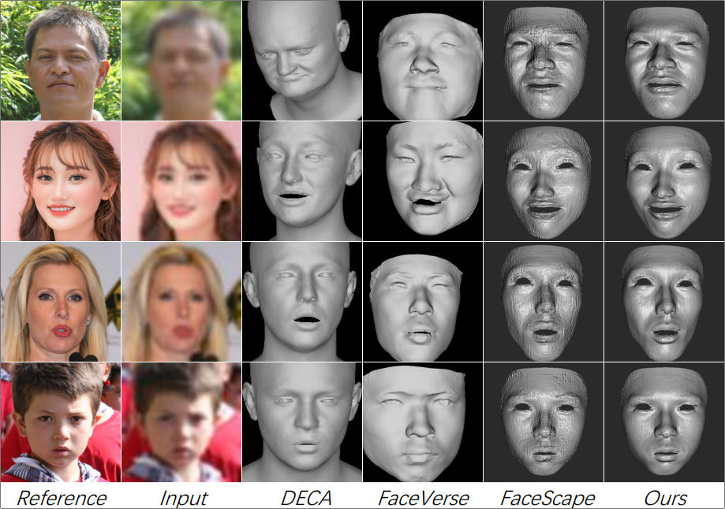
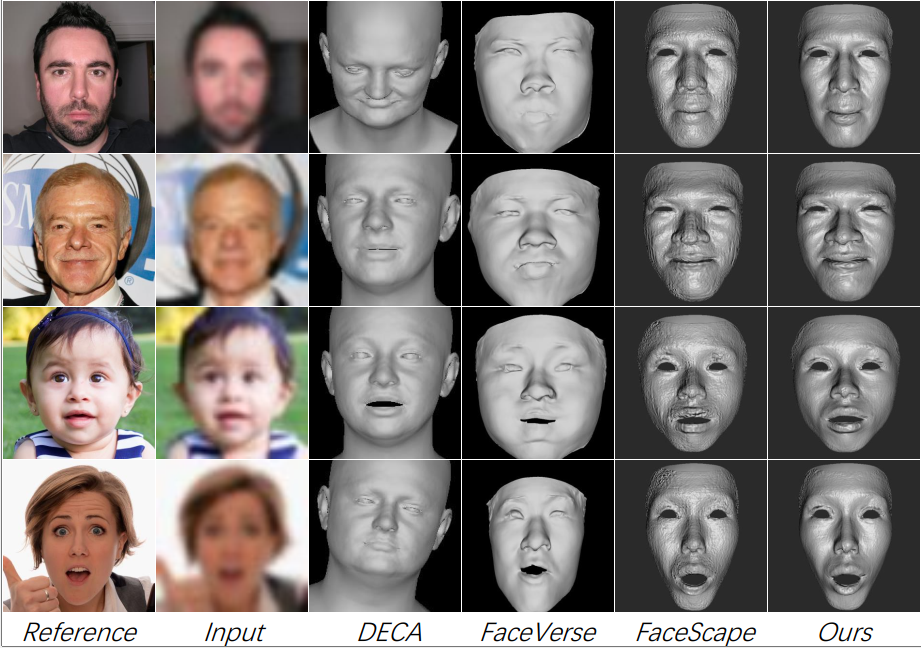
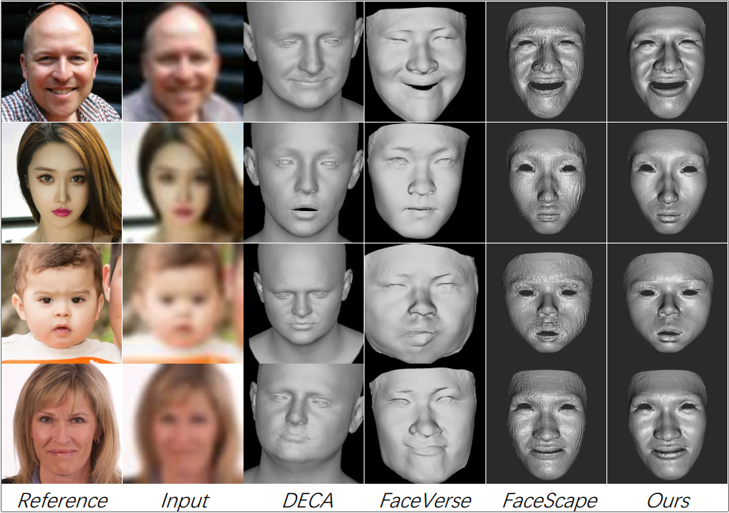
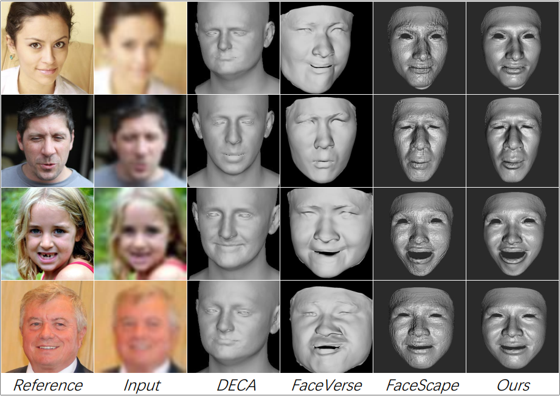
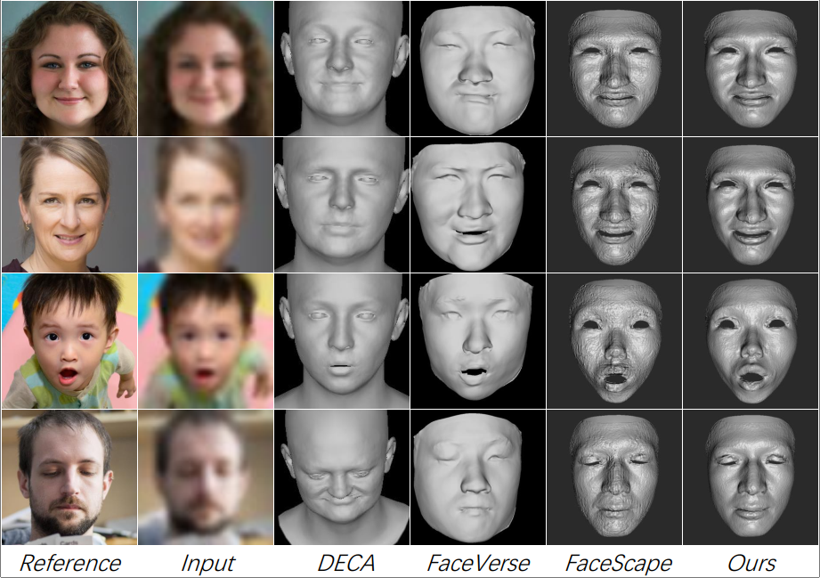

Parametric 3D models have enabled a wide variety of computer vision and graphics tasks, such as modeling human faces, bodies and hands. In 3D face modeling, 3DMM is the most widely used parametric model, but can't generate fine geometric details solely from identity and expression inputs. To tackle this limitation, we propose a neural parametric model named DNPM for the facial geometric details, which utilizes deep neural network to extract latent codes from facial displacement maps encoding details and wrinkles. Built upon DNPM, a novel 3DMM named Detailed3DMM is proposed, which augments traditional 3DMMs by including the synthesis of facial details only from the identity and expression inputs. Moreover, we show that DNPM and Detailed3DMM can facilitate two downstream applications: speech-driven detailed 3D facial animation and 3D face reconstruction from a degraded image. Extensive experiments have shown the usefulness of DNPM and Detailed3DMM, and the progressiveness of two proposed applications.
We visualize the first four identity principal components augmented with the learned encoder and present ten expression samples with the same identity attribute.
We conduct visual comparisons with two SOTA speech-driven 3D facial animation methods, FaceFormer and CodeTalker.
We show qualitative comparisons with three SOTA monocular 3D face reconstruction methods, DECA, FaceVerse and FaceScape.
    @article{park2021nerfies,
author = {Haitao Cao, Baoping Cheng, Qiran Pu, Haocheng Zhang, Bin Luo, Yixiang Zhuang, Juncong Lin, Liyan Chen, Xuan Cheng},
title = {{DNPM: A Neural Parametric Model for the Synthesis of Facial Geometric Details},
journal = {ICME},
year = {2024},
}